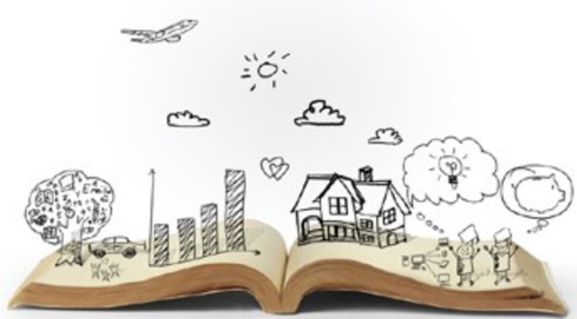
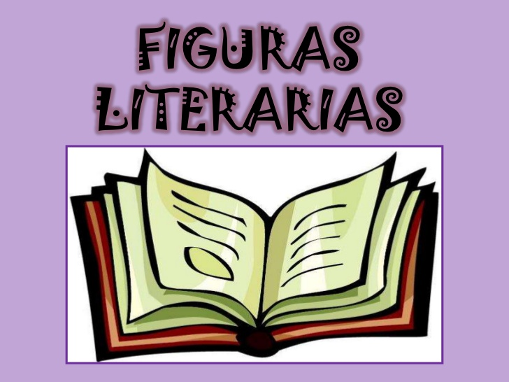

figuras literarias.

Las figuras literarias son formas no convencionales de utilizar las palabras, de manera que, aunque se emplean con sus acepciones habituales (a diferencia de lo que ocurre en los tropos), se acompañan de algunas particularidades fónicas, gramaticales o semánticas, que las alejan de ese uso habitual, por lo que terminan por resultar especialmente expresivas. Debido a esto, su uso es característico, aunque en modo alguno exclusivo, de las obras literarias.
De forma coloquial, reciben también los nombres de recursos literarios, estilísticos, retóricos o expresivos y el de figuras retóricas o del discurso, etc.
Las figuras, junto con los tropos, constituyen dentro del ámbito de la retórica uno de los formantes básicos del ornatus retórico, el constituyente principal de la elocutio.
Estas figuras son importantes ya que los griegos las usaban para comunicarse de forma escrita.
Figuras de dicción.
Las figuras de dicción afectan primordialmente a la forma de las palabras, aunque en ocasiones inciden también sobre el significado. Se distinguen cuatro categorías: figuras de transformación, figuras de repetición, figuras de omisión y figuras de posición.

Figuras de transformación.
También llamadas metaplasmos consisten en la utilización de formas léxicas que serían, en teoría, incorrectas en la lengua ordinaria. Las más conocidas de estas figuras son las licencias métricas.
Figuras de repetición.
Definición:
Las figuras de repetición consisten precisamente en la “repetición” de un sonido, palabra u oración. Hay (12) tipos: La aliteración, anáfora, anadiplosis, concatenación, epanadiplosis, epífora, el paralelismo, pleonasmo, polipote, la paranomasia, el polisíndeton y la reduplicación.Ejemplos:
1. ALITERACIÓN (transmite sensación): “Mi mamá me mima.”2. ANÁFORA (repite una o más palabras al principio de uno o más versos): “¿Qué es la vida? Un frenesí, ¿qué es la vida? Una ilusión.”
3. ANADIPLOSIS (usar la palabra con la que se empieza una frase o verso haciendo que ésta sea la última del verso o frase anterior) : “Nadie ama solamente un corazón: un corazón no sirve sin un cuerpo.”
4. CONCATENACIÓN (repetición de palabras encadenadas): “La plaza tiene una torre, la torre tiene un balcón, el balcón tiene una dama, la dama una blanca flor.”
5. EPANADIPLOSIS (repetición de la misma palabra al comienzo y al final): “¿Cómo era, Dios mío, cómo era?”
6. EPÍFORA (repetición de una palabra para cerrar un párrafo): “De padres ladrones, críanse con ladrones, estudien para ladrones.”
7. PARALELISMO (repetición leve de la estructura de la oración): “Que te amo con el alma, que te quiero con el corazón.”
8. PLEONASMO (repetir una idea para expresar algo con fuerza): “Bésame con besos de tu boca.”
9. POLIPOTE (repetir una palabra en la misma frase): “Amigo de sus amigos.”
10. PARANOMASIA (colocar dos palabras que suenan igual pero de significado distinto): “Tardón en la mesa y abreviador en la misa.”
11. POLISÍNDETON (repetición de conjunciones con lentitud exprea del autor): “Y luego borra muros y ventanas, mañanas y mañanas y mañanas: me borra todo con su voz borrosa.” y
12. REDUPLICACIÓN (repetición continuada de una palabra): “Que por mayo era, por mayo.”
Las figuras de repetición consisten en el uso de elementos lingüísticos (fonemas, silabas,canciones, fraces, oraciones...) que ya habían sido usados en el mismo texto. La repetición no tiene por qué ser necesariamente exacta, por lo que en muchas ocasiones se dan casos de semejanza o igualdad hacia un mismo producto o palabra.
Las figuras de repetición son las siguientes:.
Figuras de omisión.
Las figuras de omisión consisten en la supresión de un elemento lingüístico y necesario, en teoría, para la construcción del texto. Su uso tiende a aligerar la expresión.
Figuras de posición.
Las figuras de posición son aquellos procedimientos que se basan en la alteración del orden normal de las partes de la oración
Las figuras de posición son las siguientes:Hipervaton, ansátrofe, tmesis e inversión
Autora:Katherine Daniela Castro Sigarán